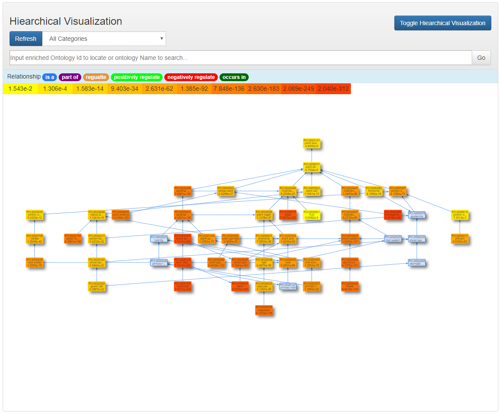

The Ontology Enrichment Analysis Tool (OAT) supports two ways to conduct the ontology enrichemnet analysis: Statistic analysis and Dynamic analysis. The statistic analysis allow users to find enriched ontology terms based on user's input annotations. The dynamic analysis will find the enriched onology terms from the database of Planteome. OAT supplies three main statistic matheods to calculate the significant p-values for each ontology terms associated with the input gene list. After finding the significant enriched ontolog terms from supported ontology categories, such as GO:CC, GO:MF, GO:BP, PO, TO, EO, the OAT provides three types of visualizations to help users to analyze the enriched terms.
For Statistic analysis, the users need to input a list of annotations in form of
Gene_ID Ontology_Term
which are two strings separated by spaces or tabs to be the Reference Background. Then a list of "Gene_ID" should be input in the Gene List.
For example, the string "fakeGeneID_0001 GO:0000001" can be a valid input annotation. It is suggested that different annotations should be separated by line breaks.
For Dynamic analysis, the users need to input a list of interesting genes. The genes can be specified by the name of the gene product (e.g. AT1G65620 )or by the unique database ID of the gene product (e.g. TAIR:locus:2034163).
The user can switch between different analysis method by selecting from the Query Type.The statistic analysis allow users to find enriched ontology terms based on user's input annotations. Based on user's input data, OAT can find the ontology terms which are significant enriched by the input gene list.
The dynamic analysis will find the enriched onology terms from the database of Planteome. The ontology curators keep updating the annotation database to ensure it contains the most comprehensive ontology information.
After inputing the interested gene list, the users can process the analysis by following buttons.
Submit will submit the input gene list to disambiguation and create the final input gene list.
Analyze will submit the disambiguated input gene list to OAT. OAT utilizes the Planteome Query APIs to conduct the significant analysis with considering the user's input parameters. A table of the analysis results will be shown to
Visualize will create a new page in which all the enriched terms will be used to create visualzation results to help users to study the structure of the enriched ontology terms.
Since different genes can have the same name, to conduct accurate enrichement analsyis, OAT requires users to specify the intented input genes from all the ambiguous input gene names. To avoid this trivial procedure, unique gene IDs are encouraged to be used.
In the process of disambiguation, all the genes not appear in the database will be listed as following:
Recognized genes with ambiguities will be listed to allow users to select the prefered ones.
All the enriched ontology terms are listed in a table for users to study details of each ontology terms. OAT provides convenient functionalities such as downloading the table, sorting the table, linking ontology terms to Planteome database, filtering the data based on ontology categories, and quick search among analysis results.
Three types of visualizations are provided in OAT, they are
The selected nodes in the network visualization and hierarchical visualization are shown as following.
Users can click the the shown parent nodes and children nodes to locate them in these two visualziations quickly.
Each ontology node is assigned a color based on its significant p-value. Higher significance (less p-value) results in more red, less significant (higher p-value) ones will be colored in yellow.
A quick search functionaly is provided so that the users can search among all the enriched nodes.
The locating is requires the input of a valid Ontology ID. Aftering typing some strings in the search input box, the OAT will list all the ontology terms whose name contains the input string.
Aftering selcting from all the listed onology terms. The ontology ID will be automatically shown in the input box. By clicking the button Go, the node in the input box will be centered in the canvas.
All the nodes of the enriched ontology terms are located in the canvas based on force-directed method. The initial layout put all the nodes in a cirle, after clicking the button Resume Animation, the nodes will be relocated based on their adjacency infomation. This procedure will be animated. Note that this animation can be slow when there are significant number of enriched terms.
The nodes in one onotlogy category is clustered toghther and distributed hierarchically.
An annotation matrix is displayed to show which genes are associated with which enriched ontology terms. OAT allows sorting the rows and columns of the matrix based on different schemes.